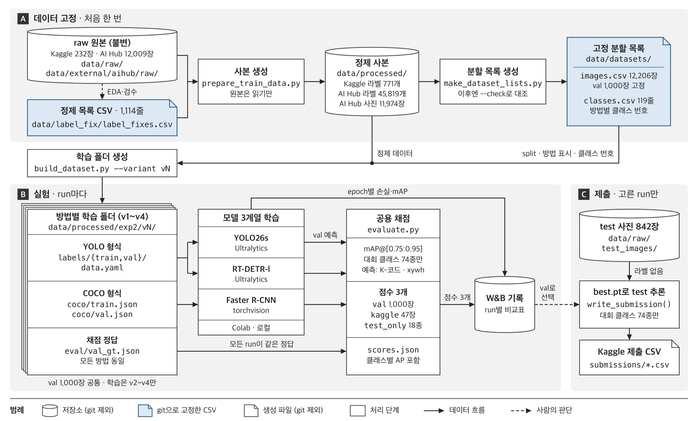

1 / 0
프로젝트 목표
같은 데이터·같은 채점으로 비교하도록 파이프라인을 고정했습니다.
- 원본은 건드리지 않습니다. 고친 내용은 CSV에 기록하고 스크립트가 사본을 만듭니다.
- 분할은 파일로 고정합니다. train/val 목록을 git으로 관리합니다.
- 채점 코드는 하나만 씁니다. 세 모델을 같은 함수로 채점합니다.
- 가설 → 결과 → 회수로 기록합니다. 실패한 실험도 남깁니다.
| 계열 | 모델 |
|---|---|
| 1-stage | YOLO26s |
| DETR | RT-DETR-l |
| 2-stage | Faster R-CNN (R50-FPN) |

← →/Space 이동 · N 노트 · Esc 목차